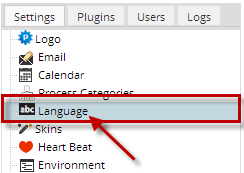
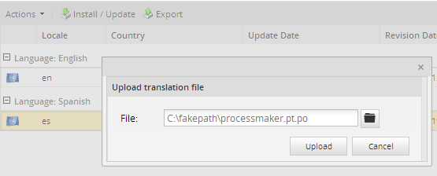
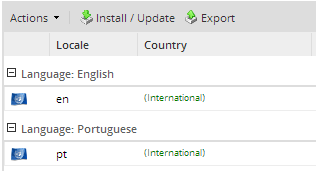
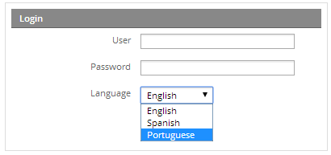
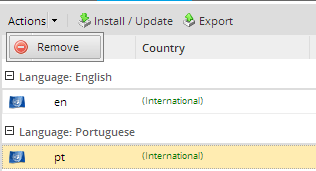

Overview
ProcessMaker 2.0 is available in a number of different languages, but only comes with the English interface installed by default.
Recommendations
- If ProcessMaker has been upgraded, translation file doesn't upgrade with the latest version, it must be downloaded fromhere and upload it into ProcessMaker.
- When upgrading a language, it is strongly recommended to Clear Cache or press Crtl F5 to refresh your web browser from ProcessMaker 2.0.40 +; or Deleting ProcessMaker Compiled Cache in ProcessMaker.
Installing Additional Translations
To install additional languages in ProcessMaker 2.X, download your language from the list below. Find the PO translation file for your language and click on its link to download it to your hard drive.
Unlike ProcessMaker 1.X, ProcessMaker 2.0 now supports country identifiers, so the country can be specified in the language code. In this way Chinese from Mainland China (zh-CN) can be distinguished from Traditional Chinese (zh) used in Taiwan. If a translation file is installed with the country code, then that country's flag will be displayed in the list of available languages and that country code will need to specified in the URL to change the language.
From version 2.5 languages have changed, even if some labels are not translated they have to contain the same number of labels than the English, that's why all languages were updated. Note that those can't be used on version 2.0.45 or previous.
Dates will be updated only if a language is updated. However, all languages are updated to version 2.5.1 since the structure and order of the labels have changed. list of languages for version 2.5.1 could be found on this folder. If you have version 2.5, list of files can be download on this folder, and if you are using ProcessMaker from version 2.0 to 2.0.45, languages could be found on this folder
After downloading the translation file, then login to ProcessMaker as the "admin" user (or any user with the PM_SETUP_ADVANCE permission in her role). Go to ADMIN > Settings > Languageto see a list of installed languages.

To import a new language, click on the Import / Update button at the top of the list of languages. Click on the file button to select the PO translation file which you downloaded. ProcessMaker will accept either normal PO files or PO files which are compressed with gzip.

Then, click on Import to upload the translations and insert them in the wf_

When done importing the language, a message box will indicate how many translation phrases were successfully imported.

The new language should now appear in the list of installed languages.

Note: To add a new translation to ProcessMaker or update an existing translation, see Translating ProcessMaker.
Changing to a Language
After a language has been added to the system, the user can change to that language by going to the ProcessMaker login screen and selecting it from from the Language dropdown box.

It is not necessary to logout and login just to change the language of the ProcessMaker interface. At any time, the user can simply edit the language code in the URL. Go to the web browser's location bar and edit the URL. Then, refresh the web browser screen by pressing ENTER in the location bar or pressing CTL+R, so the new language will be displayed.
For example, if a user is in the Cases List and wants to change from English to Dutch, then change "en" in the URL from:
http://example.com/sysworkflow/en/classic/cases/main
To "nl":
http://example.com/sysworkflow/nl/classic/cases/main
If the language was installed with its country code, then include that country code in the address. For example, Dutch from the Netherlands has the code "nl-NL":
http://example.com/sysworkflow/nl-NL/classic/cases/main
Note: The language that is chosen in the dropdown is set for each environment.
Designing Multi-lingual Processes
It is recommended to switch ProcessMaker to the same language when creating and editing processes, since ProcessMaker DOES NOT support multilingual in tasks and their respective descriptions..
When editing a process, the titles and descriptions for Processes, Tasks, DynaForms, Input Documents, Output Documents, and Triggers are all set according to the current system language of ProcessMaker. For example, if a task title was set while ProcessMaker was in French, then that title will be displayed to any user who enters ProcessMaker with the language set to French.
The problem is that when a user views that process when logged in with a different language, the task title will not appear, because it is set to only appear for French users. This feature allows the creation of multi-lingual processes which change language according to the language of the user, but it means that you will have to design processes in every language used by your users. Otherwise, they will see blank titles and descriptions for the various objects in the process.
In version 2.5.2, even if you create your process in a different language than the one you are using to edit it, task titles will appear in the language you use to create your process.
Changing the Default Language
Users can change their login screen to use a language other than English, by simply changing the language code in the login URL, but it is better to change the ProcessMaker code to always redirect to that login URL, if the user just enters the IP address or domain name. Edit the file workflow/public_html/index.html with a plain text editor. It's generally found at the following location:
- Linux/UNIX:
- /opt/processmaker/workflow/public_html/index.html
- Windows:
Change the language code in line 6 of the code:
For example, if changing to Spanish, use the "es" language code:
If only using a single workspace in ProcessMaker, it may also be a good idea to also add the workspace to the URL, so the default language for the workspace is always selected. For example, if only using the default "workflow" workspace and the login screen will be in Spanish:
Then modify the sysLoginNoWS.xml file located on the same path and add at the beginning of the JavaScript code the following line:
getField('USER_LANG').value = "es";
......
Go back to the login page, press Cntrl+F5 to refresh changes and the new language will display first on the Language field:
Note: These changes to the source code will be overwritten each time ProcessMaker is upgraded, so they will have to be reapplied after each upgrade.
The Default in the Language Dropdown Box
To change the language which is selected by default in the Language dropdown box in the login screen, edit the JavaScript code in the workflow/engine/xmlform/login/login.xml file. Add code to select the language when the login page loads.
Change the lines from:
setFocus (getField ('USR_USERNAME'));
if (flagHeartBeat) processHbInfo();
if (flagGettingStarted) showGettingStarted();
};
to:
setFocus (getField ('USR_USERNAME'));
if (flagHeartBeat) processHbInfo();
if (flagGettingStarted) showGettingStarted();
<b>getField('USER_LANG').value = "<i>xx-YY</i>";</b>
};
change "xx-YY" to a language code installed on the system, such as "es" (Spanish) or "nl-NL" (Dutch from the Netherlands).
Also edit the JavaScript code in the workflow/engine/xmlform/login/sysLogin.xml file.
Change the lines from:
setFocus (getField ('USR_USERNAME'));
to:
getField('USER_LANG').value = "xx-YY";
setFocus (getField ('USR_USERNAME'));
Removing an Option from the Language Dropdown Box
To remove a language from the list so users can't select it from the dropdown box, use the remove() method for the USER_LANG dropdown box. Edit the JavaScript code in the workflow/engine/xmlform/login/login.xml file.
For instance to remove English from the list:
setFocus (getField ('USR_USERNAME'));
if (flagHeartBeat) processHbInfo();
if (flagGettingStarted) showGettingStarted();
<b>var i = getField('USER_LANG').length - 1;</b>
<b>for (; i >= 0; i--) {</b>
<b>if (getField('USER_LANG').options[i].value == "en") {</b>
<b>getField('USER_LANG').options.remove(i);</b>
<b>}</b>
<b>}</b>
}
Also edit the JavaScript code in the workflow/engine/xmlform/login/sysLogin.xml file.
Change the lines from:
setFocus (getField ('USR_USERNAME'));
to:
var i = getField('USER_LANG').length - 1;
for (; i >= 0; i--) {
if (getField('USER_LANG').options[i].value == "en") {
getField('USER_LANG').options.remove(i);
}
}
setFocus (getField ('USR_USERNAME'));
Updating Languages
The procedure to update an existing translation and import a new one is exactly the same. To update the translation for a language, download the PO translation file from ProcessMaker's SourceForge site and login to ProcessMaker as the "admin" user (or any user with the PM_SETUP_ADVANCE permission in her role). Go to ADMIN > Settings > Language and click on the Import or Update link at the top of the list and select the PO translation file to import into ProcessMaker.
All the old translation strings in the wf_<WORKSPACE>.TRANSLATION table will be overwritten and the new translation strings will be used in the ProcessMaker interface. To see the new translation, refresh the web browser screen by pressing CTL+R or by clicking on a different ProcessMaker menu.
Deleting Languages
Only languages which have not been used when designing processes may be deleted. The reason is that deleting that language would mean loosing information for a process.
To delete a language from the ProcessMaker system, login into the ProcessMaker workspace where the language was originally installed. For example, if the language was originally installed in the "sales" workspace, then log into that workspace. Go to ADMIN > Settings > Language and select the language in the list by clicking on it so it is highlighted. Then, go to the Action menu and select the Remove option.

In the message box which appears, confirm the deletion by clicking on Yes.

The language will be deleted from the ProcessMaker installation.
Note: The language used by default cannot be deleted. This validation is made from version 2.8